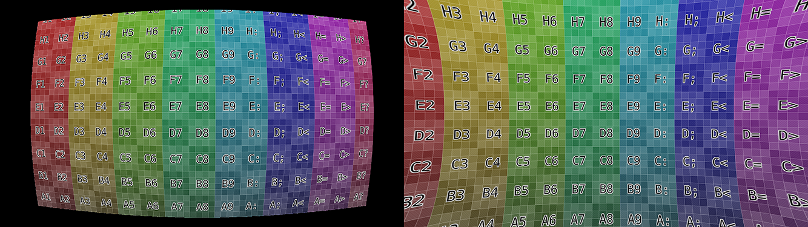
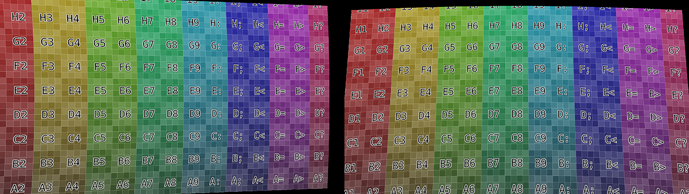

::.. _bpy.types.MovieTrackingCamera:
摄像机
此面板包含用于拍摄当前正在剪辑编辑器中编辑的影片的摄像机的所有设置。这里可以使用不同的预定义设置，可以从面板标题中选择。但诸如失真系数和主点等设置不包括在预设中，即使使用了摄像机预设，也应填写。
- 传感器宽度
在相机的CCD传感器的宽度。这个值可以在摄像头规格上找到。
- 像素宽高比
是CCD传感器的像素方面。这个值可以在相机规格中找到，但也可以被猜出。例如，您知道素材应该是1920×1080，但图像本身是1280×1080。在这种情况下，像素方面是：1920/1280 = 1.5。
镜头
- 焦距
不言自明；这是电影拍摄的焦距。它可以以毫米或像素为单位设置。
- 光心
是相机中使用的镜头的光学中心。在大多数情况下，它等于图像中心，但在某些特殊情况下可能会有所不同。在这种情况下，请检查相机/镜头规格。
Tip
光学中心也被称为摄影测量学中的主点。
- 设定中心
参见 设置主点为中心。
- 镜头畸变
将扭曲的坐标转换为未扭曲的坐标的数学函数。
- 多项式:
多项式径向失真。使用三个失真系数。K1、K2和K3。
- 分割:
它定义了高失真，这使得该型号更适合带有鱼眼镜头的相机。使用两个失真系数：K1、K2。
- Nuke:
Nuke合成器使用的失真模型。使用两个失真系数K1、K2。
- 布朗:
布朗-康拉迪是最先进的数学镜头失真模型之一。用于建立径向和切向畸变模型。可以使用多达四个径向畸变系数。K1 - K4和最多两个切向畸变系数。P1和P2。
- 系数
系数用于补偿拍摄动画时的镜头失真。目前，这些值只能使用失真模式下可用的工具手动调整（尚无校准工具）。要执行此操作，请调整K1，直到求解最接近已知焦距（但也要考虑网格和注释以防止 "不可能" 失真）。
- 径向畸变系数（K1 - K4）
镜头失真模型中的系数是相互独立的。正值会产生桶状失真，而负值会产生枕状失真。用负数和正数的混合系数，你可以定义更复杂的胡子畸变或其他复杂的畸变，这些畸变不太常见，但并不罕见。
 正、负K系数的径向失真实例。
- 切向失真系数 (P1, P2)
独立工作，允许补偿传感器不垂直于一组镜头的情况。光学中心（也称为主点）将从传感器的中心移位（扭曲）。P1用于补偿传感器在Z（垂直）轴的旋转，而P2用于补偿传感器在X（水平）轴的旋转。这种失真可以在带有传感器稳定系统的相机中发现。
 P系数的切向失真实例。